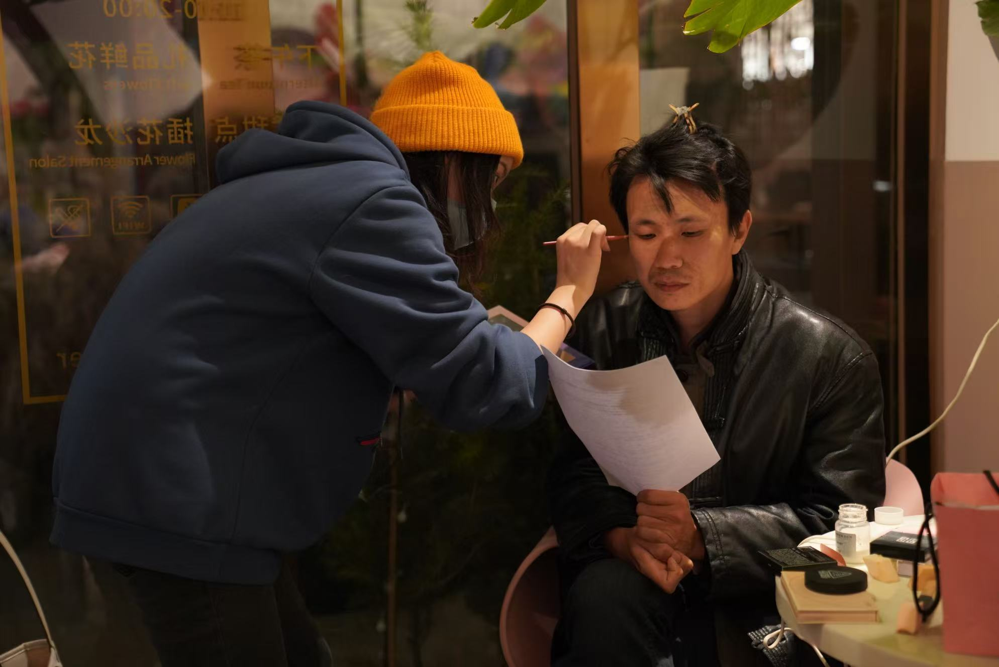
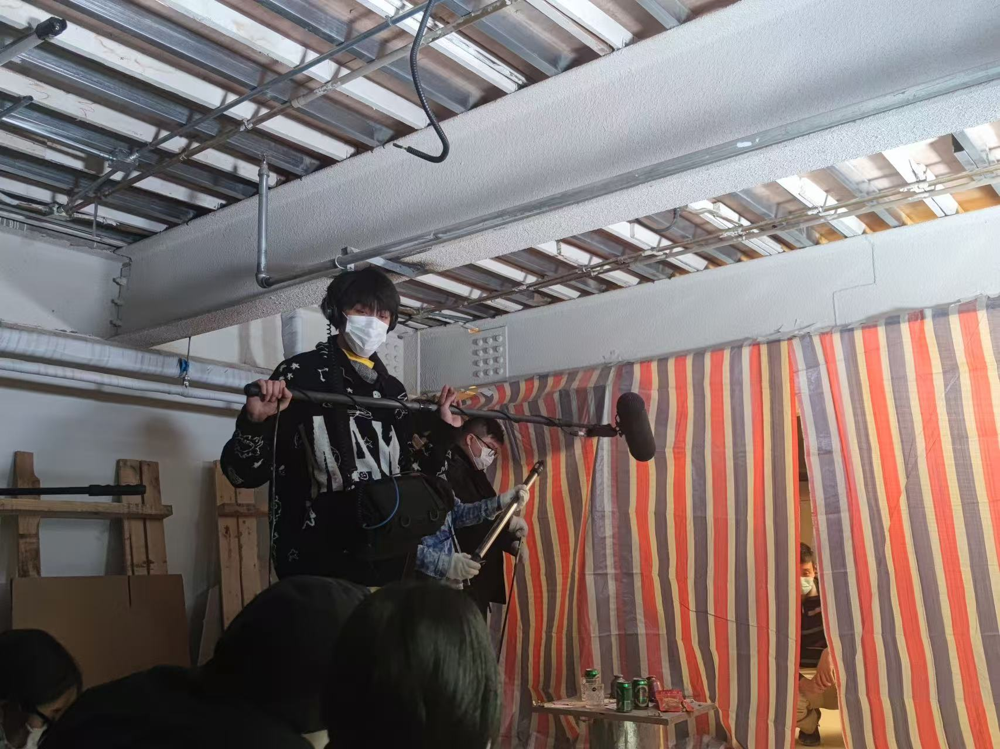
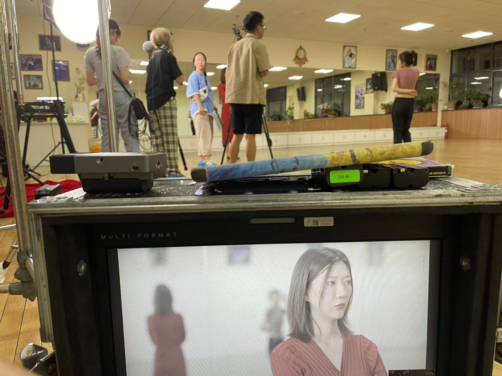
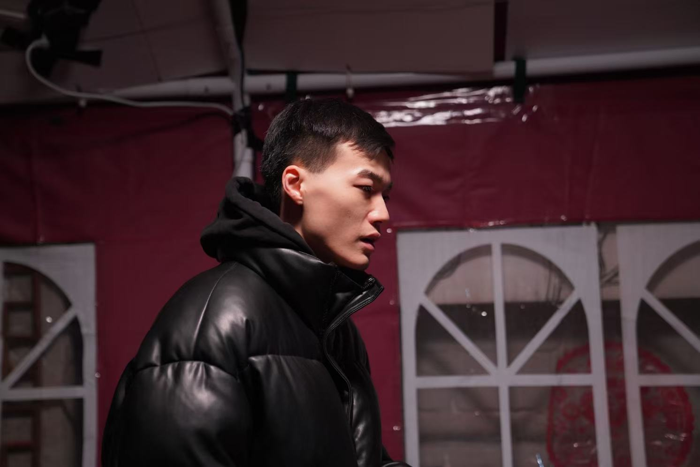
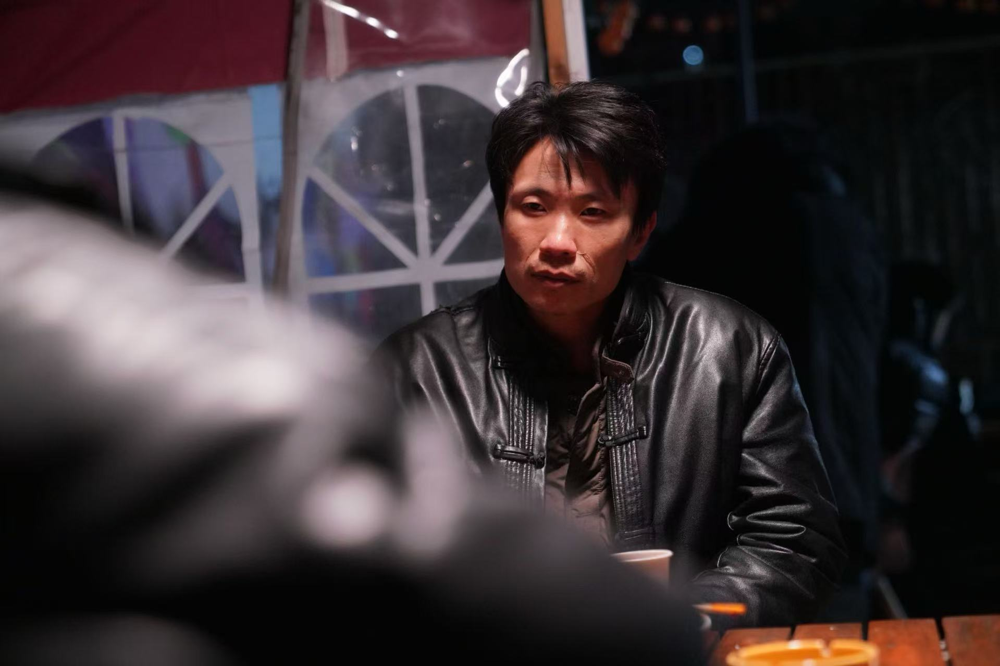
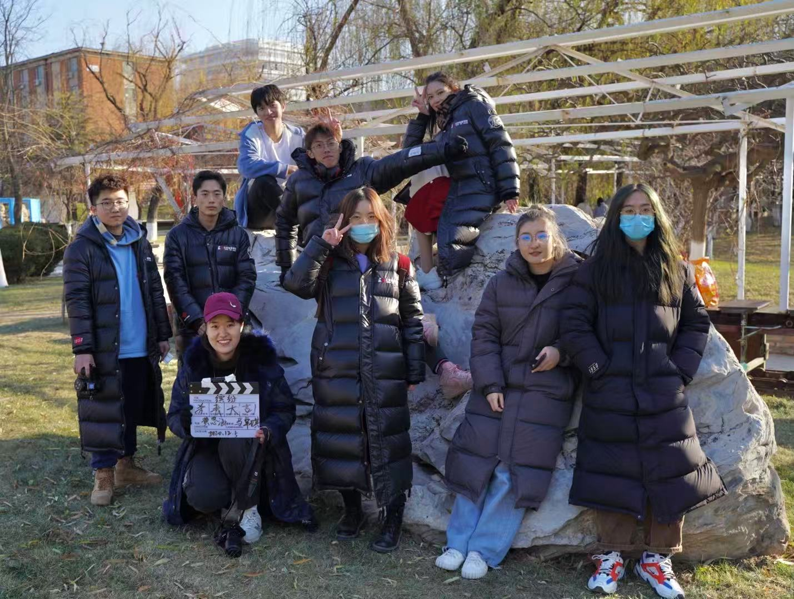
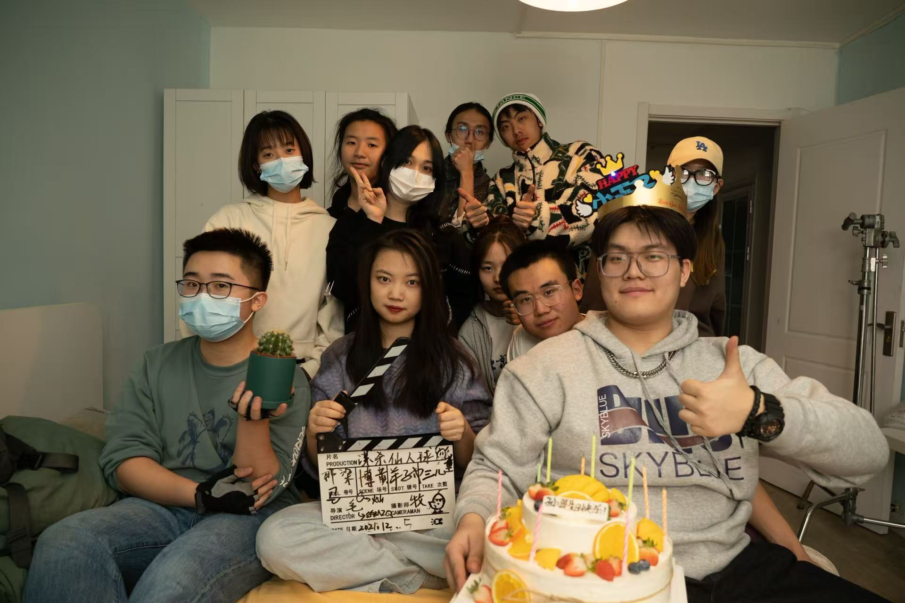
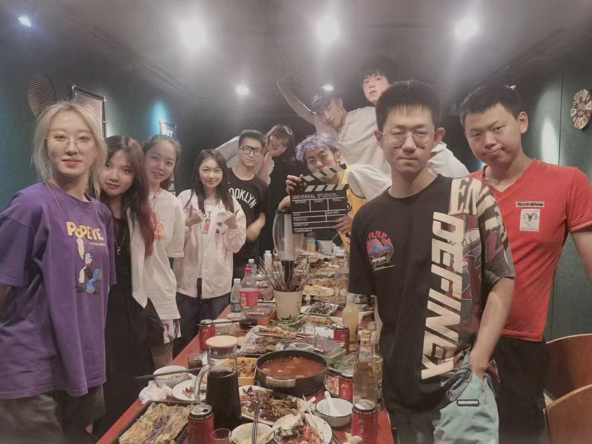

Portfolio
Week 2
Video 1:
Video 2:
Video 3:
Week 3
Video 4:
Week 4
Rode Go version
Video 5:
Video 6:
original
Video 7:
Video 8:
Video 9: Klushev Effect
film screen shot

light analysis

Remake Poster









For this exercise we created a short chase scene where one character is chasing another. The aim was to make the scene visually interesting by including obstacles and keeping the audience unsure about what might happen next. We filmed the scene using a smartphone with the Blackmagic Camera app and mainly used handheld shots to give the chase a more energetic and natural feeling.
Analysis
The handheld camera worked quite well for this scene because it made the movement feel more intense and helped build tension during the chase. However, some of the shot transitions were not very smooth, so the continuity between shots could be improved. We also had some issues with the original background sound, so we decided to replace most of the audio during editing. If we were to do this again, we would plan the shot sequence more carefully and try to capture better location sound to make the scene feel more natural.
This issue mainly focuses on lighting practice. We attempted to create the atmosphere of the picture by using different light sources and angles, such as enhancing the layers of the picture through contrast of light and shade and making the characters stand out more. In fact, lighting is much more difficult than imagined. A slight adjustment in position or intensity can make a big difference in the picture effect. I think the atmosphere of some shots was achieved this time, but the overall lighting was still a bit unstable and not detailed enough. If I were to do it again, I would do more tests in advance to make the lighting more consistent and try more design-oriented lighting methods.
This issue mainly focuses on sound practice. We switch between different scenes and try to locate the source of the sound through environmental changes. During the shooting process, we find that sound actually has a significant impact on the authenticity of the picture. For instance, the echo in different spaces and the distance between the sound source and the listener can change the auditory perception. I think we achieved some effects in terms of the directionality and spatial sense of the sound this time, but some transitions were not smooth enough. If we were to do it again, I would pay more attention to collecting ambient sounds and make the sound transitions smoother in post-production to make the overall sound more coherent.
This episode mainly focused on blocking and coverage. We attempted to convey the relationships through the positions and movements of the characters, and used different camera shots to cover the same scene. During the shooting process, it was observed that the changes in the characters' positions actually had a significant impact on the overall feeling of the picture, and coverage also provided more options for post-production editing. I believe that this time we basically achieved the seamless transition between different shots, but some of the movements were still a bit stiff. If we do it again, I will design the character movement paths in advance and shoot more shots from different angles to make the picture and editing more smooth.
This episode mainly focuses on the practice of actor performances. We attempt to guide the actors to perform with clear goals, rather than just expressing emotions. By adjusting their movements and reactions, the character relationships can become clearer and the performance more realistic. I think the emotions in some segments are relatively natural, but the guidance on changing and details from the actors is not quite adequate. If we do it again, I will be more specific about each character's goals and guide the actors more during the shooting to encourage changes in their subtle movements, making the performance more layered.